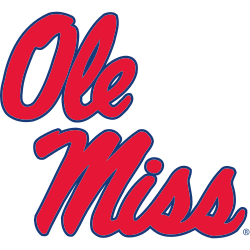
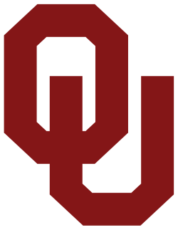
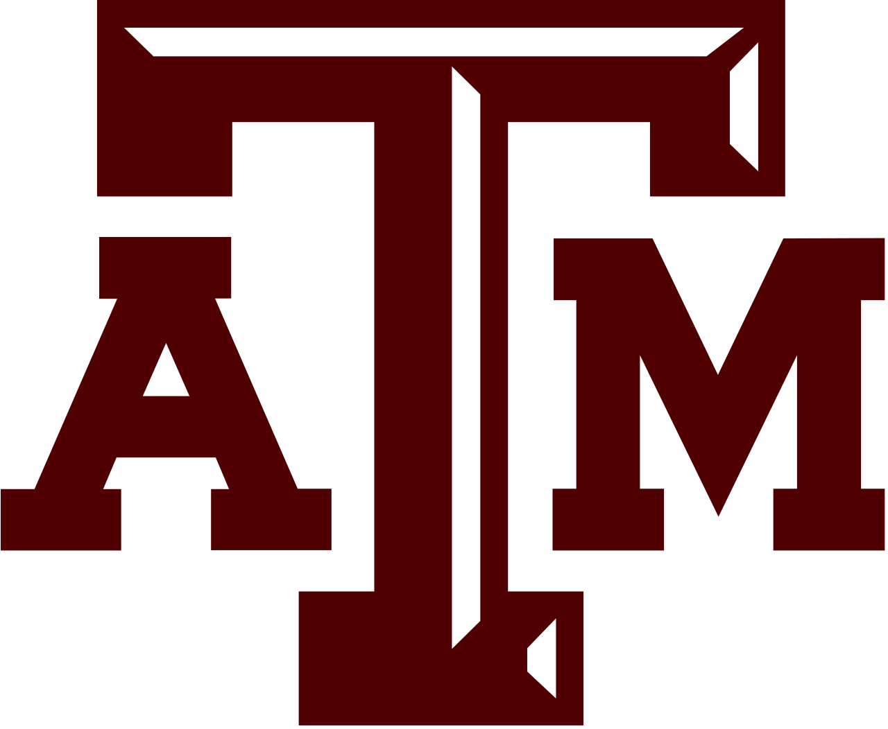
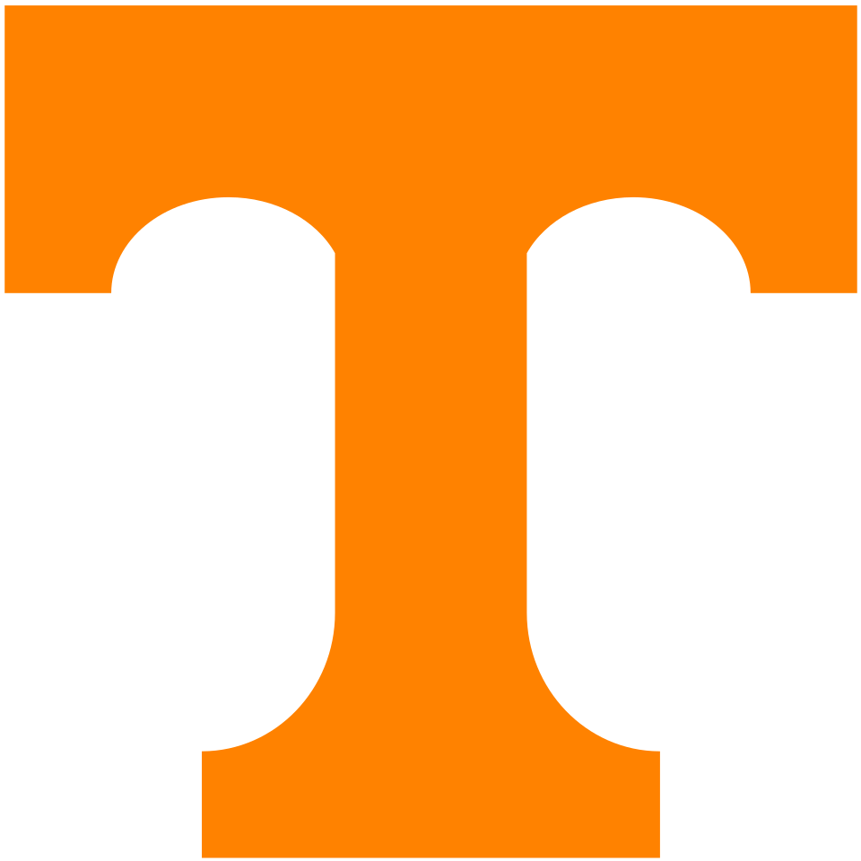
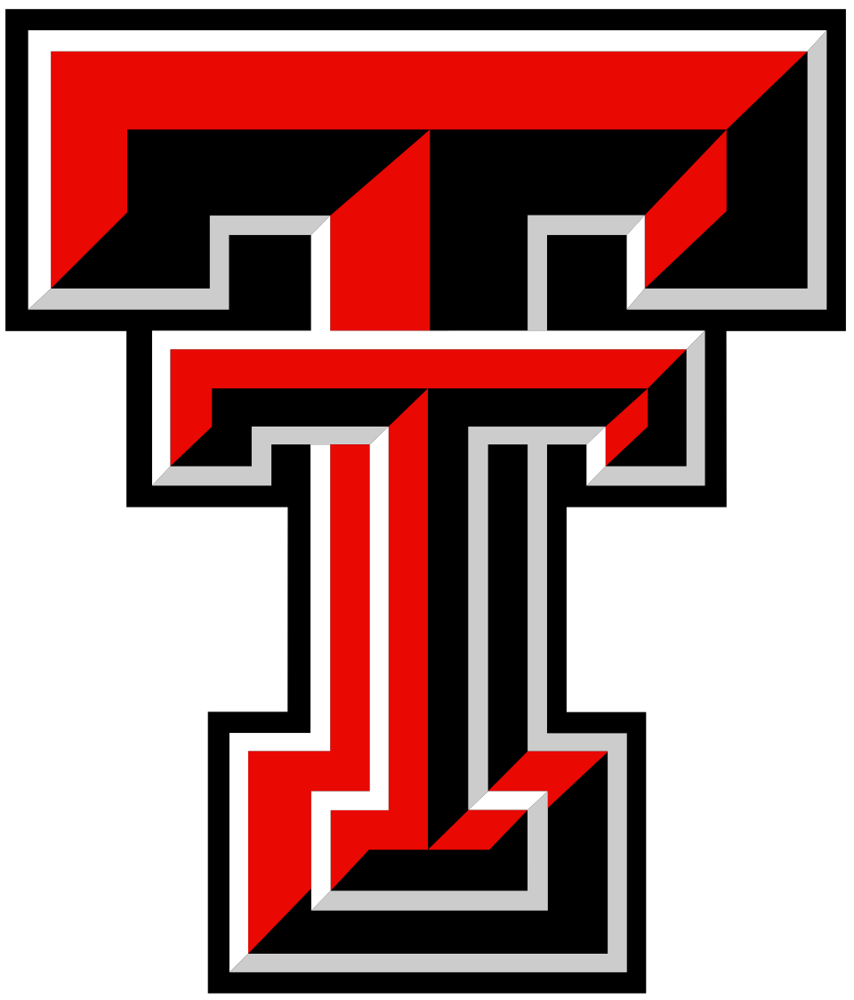
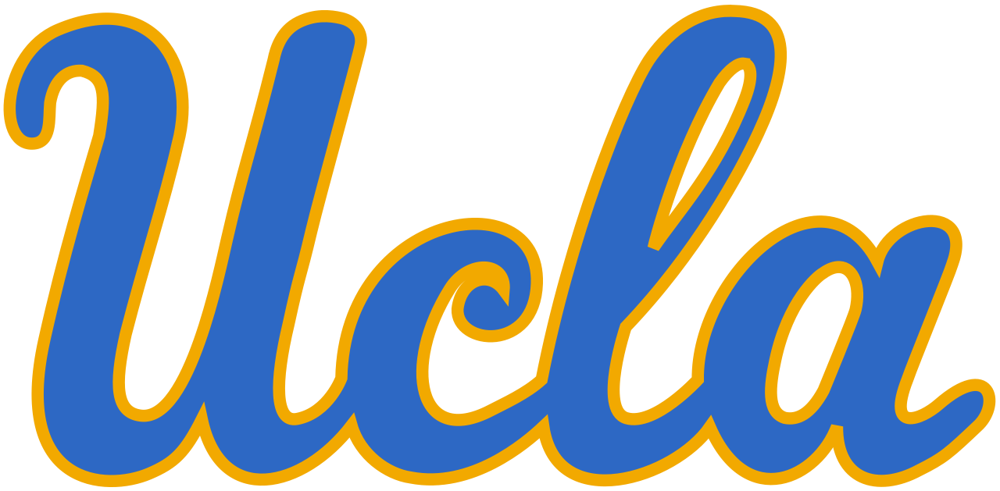
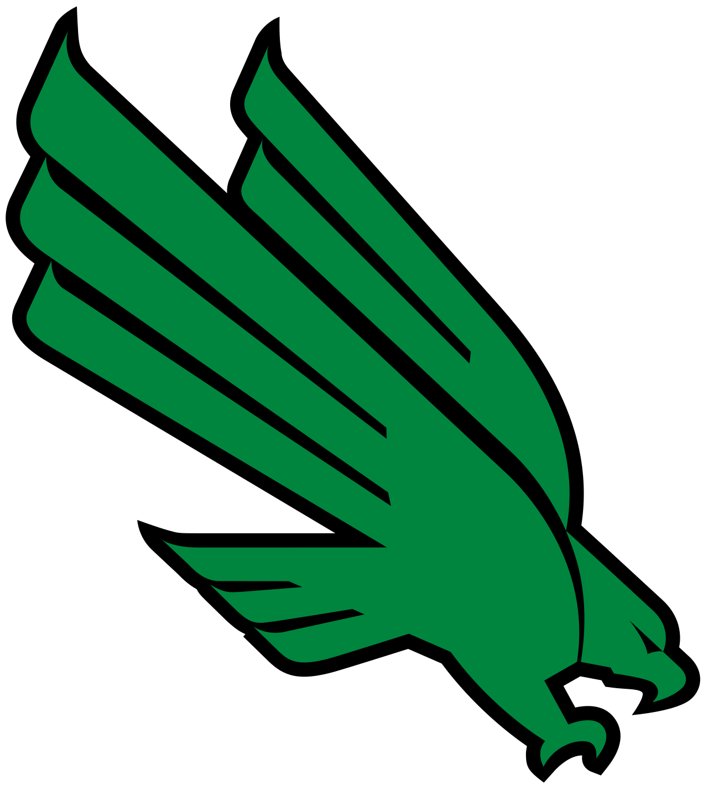
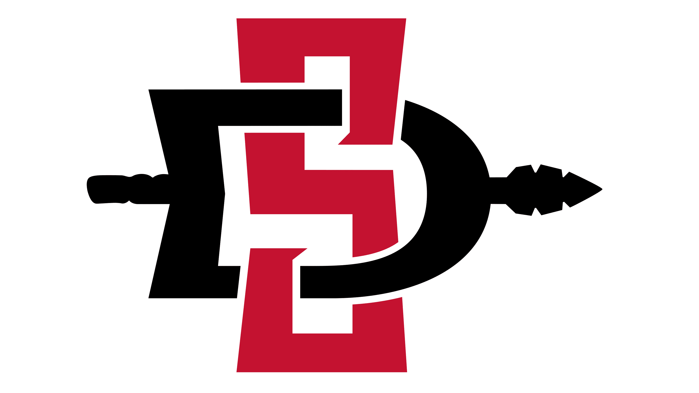

College football is one of the most competitive sponsorship environments in sports. Brands fight for visibility in a crowded Saturday landscape where fans are loyal to the game — not the advertisers. Dos Equis needed to do more than show up. It needed to become part of the game.
Dos Equis believes an interesting life is full of stories, and the great ones start with unpredictable choices. The Go For Dos campaign centered on the sport's most daring play — the two-point conversion — perfectly embodying the brand's ethos to celebrate bold choices.
The integrated agency team leveraged key media partner Disney and ESPN, and talent partners Drew Brees and Chris Fowler to tell the story above-the-line, while my team's role was to leverage university partnerships to bring the story to life on the ground, delivering an impactful experience to the fans at the heart of the game.








2024 Roadshow Tour
8/31Notre Dame @ Texas A&M – ESPN College GameDay
9/21Tennessee @ Oklahoma – ESPN College GameDay
10/5Kansas @ Arizona State
11/9Colorado @ Texas Tech – FOX Big Noon Kickoff
11/23USC @ UCLA
As college football's inaugural sponsor of the two-point conversion, we had to go big. To bring the spirit of Go For Dos to life, we developed a National Roadshow Tour for high-impact brand moments and a local activation toolkit for regional sales teams to sustain presence throughout the season.
The National Roadshow was a 5-stop tour including (2) ESPN College GameDay and (1) FOX Big Noon Kickoff games, putting the brand at the center of some of the season's most anticipated moments.
The activation elevated engagement by kicking off weekends in the heart of campus culture. On Friday nights, 21+ students packed local hotspots for bar takeovers that reimagined familiar venues as high-energy, branded celebrations. To amplify the theme of "dos," celebrity DJ duos including Nina Sky, Vavo, and Disco Fries headlined the nights, blending music, movement, and memorable moments. From sampling to packed dance floors, Dos Equis® made an unforgettable entrance that set the tone for gameday.
On Saturdays, the Roadshow footprint shifted to tailgate spaces, where DJ duos kept the energy alive. The space functioned as a lively beer garden with interactive fan activities like the Go For Dos photo booth, football-inspired games, prize giveaways, and product sampling. Every element encouraged fans to go big, embrace boldness, and celebrate their teams — all leading up to kickoff.
(+111% YoY)
(+206% YoY)
(+18% YoY)
(vs. 23–24)
Regional Toolkit